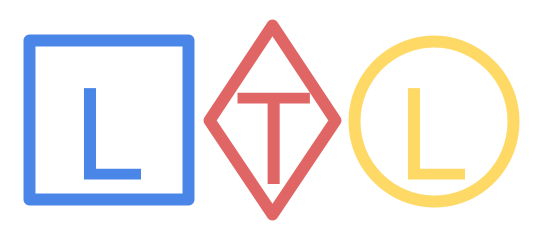

Projects
Model transformation among UML state machine declarative models
A transformation tool to support UML definition languages into prolog such as PlantUML.

Verification of LTL properties in time systems
A query platform allowing the analysis of sequential events.
Tools
Model transformation among UML state machine declarative models